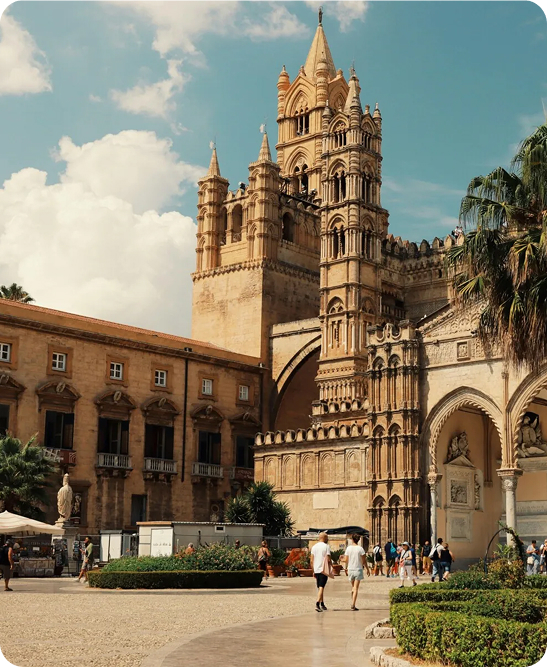

La piazza e le sue meraviglie
Piazza Duomo si trova nel cuore del centro storico di Palermo ed è uno spazio molto significativo per la città. Qui si incontrano storia, arte e vita quotidiana. La piazza è un punto di riferimento sia per i cittadini sia per i turisti che visitano il capoluogo siciliano.
L’edificio principale della piazza è la Cattedrale di Palermo, dedicata a Maria Santissima Assunta. Fu costruita nel 1185 per volontà dell’arcivescovo Gualtiero Offamilio. Nel corso dei secoli ha subito molte modifiche, per questo oggi presenta uno stile che unisce elementi normanni, gotici, barocchi e neoclassici.
All’interno della cattedrale si trovano le tombe di importanti sovrani, come Federico II di Svevia e Ruggero II di Sicilia. Questo rende la piazza non solo un centro religioso, ma anche un luogo legato alla storia del Regno di Sicilia. All’interno della cattedrale si trova anche la famosa Torre dell’Orologio, che custodisce campane e orologi storici. Ogni giorno attira visitatori curiosi di ammirare il funzionamento dei meccanismi antichi e la vista panoramica dalla cima della torre.